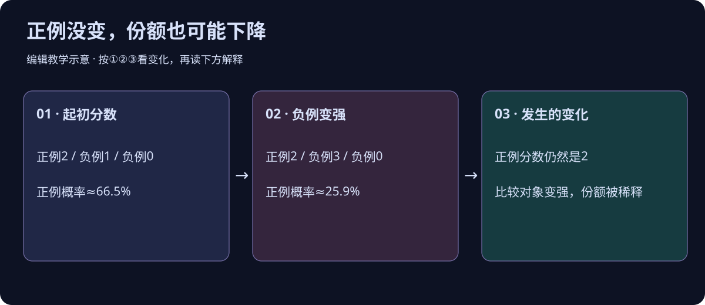
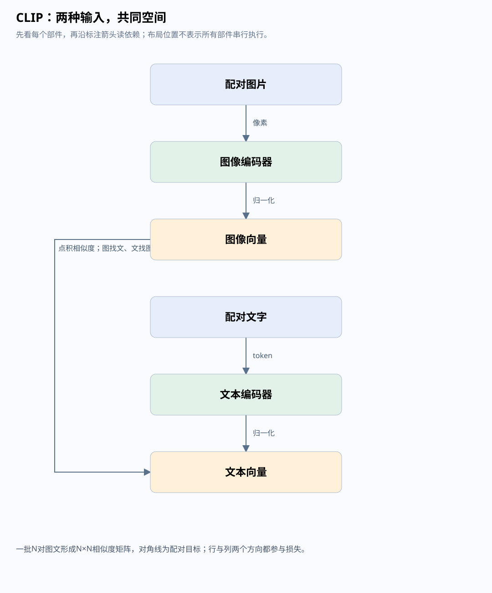

第12章 · 对比学习与图文对齐
本章开篇生活情境与衔接为编辑教学改写，借鉴原视频从经历引出概念的讲解方法，不是作者原话；原视频线索与论文见下方对应段落。
先看一件具体的事
同一只狗，为什么照片和一句话能认出彼此？

正例没变，份额也可能下降 · 点击可放大先看这个场景
一张小狗照片，和一句“一只狗在草地上跑”，原本是两种完全不同的东西：一边是像素，一边是文字。我们很容易知道它们说的是同一个场景，可模型怎么把它们放到一起比较？
问题出在哪里
先从更简单的任务开始。给同一张照片裁剪两个角度、改变一点颜色，我们希望模型仍看出它们有共同内容。把这两个视图作为正样本，把其他图片当作对照，模型就有了练习：拉近应该相关的表示，让它在这一批候选里更容易找对。
模型怎样处理
这叫对比学习。重要的不只是正例有多近，还有其他候选有多像。假设正确搭档分数没变，旁边突然出现一个分数很高的竞争者，经过softmax，正确搭档的概率份额就可能变小。分到的份额下降，不一定说明它自身变差，也可能是比较范围变了。
再看一个变化
还有更麻烦的情况：系统把“本来就相关的另一个样本”当成负例，要求它离远一点。这是假负样本。困难的假负样本尤其容易让训练信号打架。原视频借这种相对竞争来谈人的比较心；算法部分，我们要检查的仍是正负关系怎样被构造。
放回完整流程
CLIP把这个思路接到图文。一个编码器把图片变成向量，另一个把文字变成向量；在一批配对数据中，让每张图更容易找到自己的描述，也让每段描述更容易找到对应图片。这就是N×N相似度矩阵里，为什么要同时看行方向和列方向。
回到开头
训练后可以把“狗的照片”“飞机的照片”等描述当候选，用相似度做零样本分类。但候选描述会影响结果，向量接近也不等于理解了现实全部细节。图像和文字学会了在某个表示空间里对接，这已经很有用，却不需要被夸成看穿世界。
这一章怎么读先带着上面的问题往下看。每个概念先用白话接上情境，再给计算；遇到公式可以先看旁边的例子。动手实验和答案直接展开，论文留在相应概念后，想追根究底时再点开。
先动手试一试 → 12.1 带着问题进入模型
Embedding提供可比较的向量，对比目标教它哪些应靠近、哪些应区分；CLIP再把这套比较接到图像与文字之间。
先沿箭头看懂：CLIP：两种输入，共同空间

一批N对图文形成N×N相似度矩阵，对角线为配对目标；行与列两个方向都参与损失。12.2 对比学习、正样本与假负样本
先找一对本该相关的样本，再把它们放进一组候选。下面的损失不仅看这一对有多像，还看它们相对其他候选够不够突出；这就解释了竞争者变化为什么会影响份额。
对比学习通常把同一对象的不同视图作为正对，把其他对象作为负对，让表示支持目标相似性。正负的定义来自任务与增强规则，不能直接等同于现实中的朋友和对手。
把刚才的直觉一步步算出来
对比学习通常把同一对象的不同视图作为正对，把其他对象作为负对，让表示支持目标相似性。正负的定义来自任务与增强规则，不能直接等同于现实中的朋友和对手。
假负样本本来语义相似却被当成负例；困难负例则是难区分但确为负的对象。两者不同，温度会改变对相似度差异的敏感程度。
InfoNCE可写成−log[exp(sim(anchor,positive)/τ)/Σ_j exp(sim(anchor,candidate_j)/τ)]。分母中的候选集合改变，损失也会改变；这就是为什么正例分数不变，批内竞争更强也会使目标更难。
换你试一次：先猜，再算
查询与正例、两个负例相似度为[2,1,0]，温度1。正例概率是多少？若把一个真实同类标成负例，会训练出什么冲突？
参考答案与计算结果
正例概率e²/(e²+e+1)≈0.665。假负例使本应靠近的表示受到排斥，标签定义与训练目标发生冲突。
这个类比帮到哪里，停在哪里
不能把统计学习里的假负样本当作对嫉妒或破坏行为的心理诊断。
关联视频 · 已取得完整音轨并完成本机自动转写；本节综合转写与页面摘要改写，术语和个别片段尚未逐秒校对。
12.3 CLIP：图像与文字共享检索空间
把“找同一张图的另一种视图”换成“给图片找描述”。两边各自编码，再到同一空间比较，图文才有了对接的尺度。下面逐行逐列看配对矩阵，就能知道双向损失在训练什么。
图像编码器和文本编码器各自输出向量，常做归一化后比较点积；归一化向量的点积就是余弦相似度。训练使配对图文得分高于不配对组合。
把刚才的直觉一步步算出来
图像编码器和文本编码器各自输出向量，常做归一化后比较点积；归一化向量的点积就是余弦相似度。训练使配对图文得分高于不配对组合。
零样本分类可把类别写成文本提示，再比较图像与类别文本向量。它没有在当前分类任务上重新训练分类头，但仍依赖预训练数据、类别表述与分布。
原视频具体写到图文相似度矩阵两个方向的交叉熵：每张图找配对文本、每段文本找配对图像。归一化后的相似度再乘温度相关尺度；候选集内的softmax高度集中不等于真实世界的绝对确定性。换类别文本就改变分类候选，零样本是相对目标任务而言。
换你试一次：先猜，再算
图像向量[1,0]，两个类别向量为[1,0]与[0,1]。归一化后相似度各是多少？这能证明第一个类别在现实中必然正确吗？
参考答案与计算结果
相似度为1和0，模型会偏向第一个类别；仍不能证明实际标签必然正确，因为表示与候选类别可能不充分。
这个类比帮到哪里，停在哪里
CLIP是图文对比学习模型，不等于一个会生成文本回答的完整多模态助手。
关联视频 · 已取得完整音轨并完成本机自动转写；本节综合转写与页面摘要改写，术语和个别片段尚未逐秒校对。
本章交互实验
想亲手复现，就运行这段小实验
本例是编辑编写的教学计算，不是作者实验的代码复刻。先把 common.py 与本章脚本下载到同一个目录，再执行 python3 12_contrastive.py。只使用Python标准库。
from common import softmax
import math
scores=[[2.,1.,0.],[0.,2.,1.],[1.,0.,2.]]
rows=[softmax(row) for row in scores]
cols=[softmax(list(col)) for col in zip(*scores)]
row_loss=sum(-math.log(rows[i][i]) for i in range(3))/3
col_loss=sum(-math.log(cols[i][i]) for i in range(3))/3
print('image-to-text loss:',round(row_loss,6))
print('text-to-image loss:',round(col_loss,6))
print('symmetric loss:',round((row_loss+col_loss)/2,6))
实际运行输出
image-to-text loss: 0.407606
text-to-image loss: 0.407606
symmetric loss: 0.407606
先不急着读完每一行代码。找到输入、这次改变的量和最后输出，按上面的例子预测一次，再运行核对。若结果和直觉不同，打印中间值，看看差异从哪一步开始。
回到开头，你能解释了吗？
正确搭档的分数不变，为什么它的softmax份额还会下降？
CLIP为什么既要让图找文字，也要让文字找图？
用自己的话讲给一个没读过这一章的人听。能把问题、过程和结果接起来，再看公式就会容易一些。